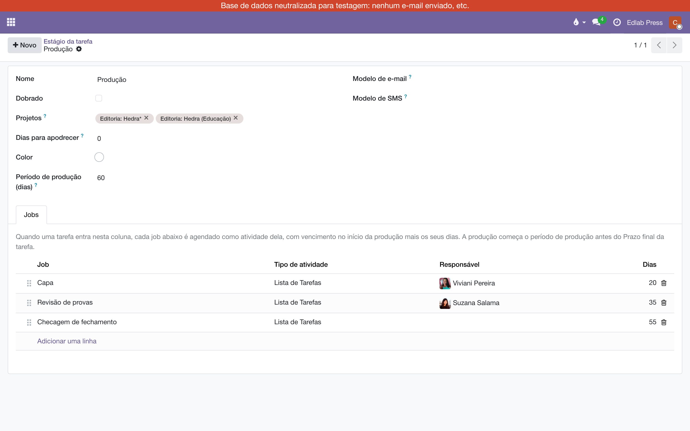

Jobs por coluna
Um módulo para a produção editorial. O card do livro entra numa coluna — Produção, Prelo — e os jobs daquela coluna viram atividades dele: cada uma com responsável, roteiro e uma data contada do Prazo final. Nada é removido depois: as atividades são trabalho em curso.
Visão geral
O irmão deste módulo, Subtarefas pela estrela, serve ao marketing: a estrela diz quanto se espera do lançamento, e a pauta de divulgação vem dela como subtarefas. A produção não anda por expectativa, anda por colunas e prazos, e não precisa de cards novos: precisa que o card do livro ganhe as atividades certas, para as pessoas certas, nas datas certas. Todo livro que entra em Produção precisa de capa, revisão de provas e checagem de fechamento, cada coisa com o seu responsável e o seu roteiro — e cada coisa com uma data, porque o que manda é o dia em que o livro tem de estar pronto.
Os jobs moram na própria coluna. Cada job diz quem faz, em quantos dias vence e o que está escrito no roteiro (como checar o fechamento de um livro, por exemplo). Quando um card entra na coluna, cada job dela vira uma atividade no chatter do card, com o roteiro na nota — e o relógio do card no quadro passa a mostrar a mais próxima.
Os jobs da coluna
No quadro do projeto, passe o mouse no título da coluna, clique na engrenagem e em Editar. O formulário da coluna ganhou a aba Jobs. Cada linha é um job:
- Job — o nome, que vira o título da atividade.
- Tipo de atividade — A fazer, Ligação, Reunião… (A fazer por omissão).
- Responsável — quem recebe a atividade. Vazio, é o responsável do card (ou quem o moveu, se o card não tiver responsável).
- Dias — quantos dias depois do início da produção o job vence. Zero é o próprio dia do início; um número igual ao Período de produção é o Prazo final do livro.
- Roteiro — abra a linha para escrever o texto que vai na nota da atividade.
Acima da aba, o Período de produção da coluna: o número de dias que se conta para trás do Prazo final até o início da produção (60 por omissão). Cada coluna tem o seu; não há nada global no projeto nem nas Definições. Pode haver jobs em mais de uma coluna: Produção tem os seus, Prelo tem os seus, cada uma com o seu período. Arraste pela alça para reordenar.

Uma coluna pode ser compartilhada por mais de um projeto. Os jobs e o período são da coluna, e valem em todos os projetos em que ela aparece.
A data de cada job
A conta parte do Prazo final do card e do Período de produção da coluna:
- o início da produção é o Prazo final menos o Período de produção;
- cada job vence no início da produção mais os seus dias.
Um livro com Prazo final em 30/03 entra numa coluna com período de 60 dias: a produção começa em 29/01. A capa, em 20 dias, vence em 18/02 (−60 + 20); a revisão de provas, em 35 dias, vence em 05/03; a ficha ao gráfico, em 60 dias, vence no próprio 30/03. Os dias de cada job contam todos do início, não um depois do outro — por isso a ordem da lista não muda nenhuma data. Se Prelo tiver um período de 10 dias, os jobs de Prelo contam de 20/03.
Card sem Prazo final agenda os jobs contando de hoje, e a nota no chatter avisa. Quando o Prazo final for posto — ou mudar —, as atividades intocadas vão para as datas certas. Conta como mexida a atividade cuja data, responsável, nota ou tipo alguém alterou; essa fica como está. Se a revisora adiantou a revisão, a mudança do prazo do livro não desfaz isso.
Entrar na coluna
Arraste o card para a coluna, no quadro, ou clique nela na barra do formulário. As atividades aparecem no chatter, com as datas, e uma nota registra o que foi agendado e para quem.

As regras são poucas:
- Sair da coluna não remove nada. Depois da produção o card segue mudando de coluna, e as atividades continuam até alguém marcá-las como feitas. A coluna seguinte, se tiver jobs, acrescenta os seus.
- Voltar à coluna não duplica. Job que ainda tem a sua atividade aberta no card não é agendado de novo. Atividade concluída virou histórico no chatter; se o card voltar à coluna, aquele job é agendado outra vez.
- Só o card de primeiro nível dispara. Subtarefa que muda de coluna não ganha jobs, e modelo de tarefa nunca.
- Coluna sem jobs não faz nada e não deixa nota.
Com a estrela no mesmo projeto
Os dois módulos convivem no mesmo projeto e no mesmo card: a estrela traz a pauta de marketing como subtarefas, a coluna traz os jobs de produção como atividades. Um não mexe no que é do outro.
O que fica de fora
- Apagar um job da coluna não apaga as atividades que ele já agendou; elas só deixam de seguir o Prazo final.
- Acrescentar um job a uma coluna não alcança os cards que já estão nela: vale para os próximos que entrarem.
- Os dias são corridos, não úteis.